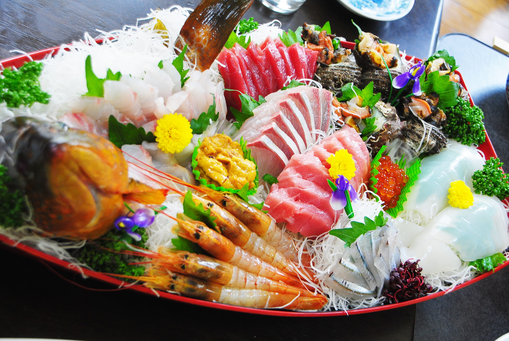

店舗案内
まん福 西新店
- [住所]
- 〒８１４ー〇〇〇〇
福岡市早良区西新店〇ー〇ー〇〇 - [アクセス]
- 地下鉄「西新駅」より徒歩３分
- [営業時間]
- 18:00～25:00 (L.O.24:30)
定休日：無 - [TEL]
- ０９２ー〇〇〇ー〇〇〇〇
まん福 ２号店
- [住所]
- 〒８１４ー〇〇〇〇
福岡市城南区西片江〇ー〇ー〇〇 - [アクセス]
- 地下鉄「福大前駅」より徒歩８分
- [営業時間]
- 18:00～25:00 (L.O.24:30)
定休日：無 - [TEL]
- ０９２ー〇〇〇ー〇〇〇〇
まん福 ３号店
- [住所]
- 〒８１４ー〇〇〇〇
福岡市城南区片江〇ー〇ー〇〇 - [アクセス]
- 地下鉄「七隈駅」より徒歩１３分
- [営業時間]
- 18:00～25:00 (L.O.24:30)
定休日：無 - [TEL]
- ０９２ー〇〇〇ー〇〇〇〇
まん福 六本松店
- [住所]
- 〒８１０ー〇〇〇〇
福岡市中央区六本松〇ー〇ー〇 - [アクセス]
- 地下鉄「六本松駅」より徒歩５分
- [営業時間]
- 平日・日 18:00～25:00 (L.O.24:30)
金・土・祝前日 18:00〜27:00 (L.O.26:30)
定休日：無 - [TEL]
- ０９２ー〇〇〇ー〇〇〇〇
焼き鳥 鳥鳥
- [住所]
- 〒８１０ー〇〇〇〇
福岡市中央区大名〇ー〇ー〇〇 - [アクセス]
- 地下鉄「赤坂駅」より徒歩４分
- [営業時間]
- 平日・土 18:00～25:00 (L.O.24:30)
金・日・祝前日 18:00〜27:00 (L.O.26:30)
定休日：無 - [TEL]
- ０９２ー〇〇〇ー〇〇〇〇
まん福 大名店

- [住所]
- 〒８１０ー〇〇〇〇
福岡市中央区大名〇ー〇ー〇〇 - [アクセス]
- 西鉄「福岡駅」、
地下鉄「天神駅」より徒歩５分 - [営業時間]
- 17:00～24:00 (L.O.23:30)
定休日：日曜日 - [TEL]
- ０９２ー〇〇〇ー〇〇〇〇